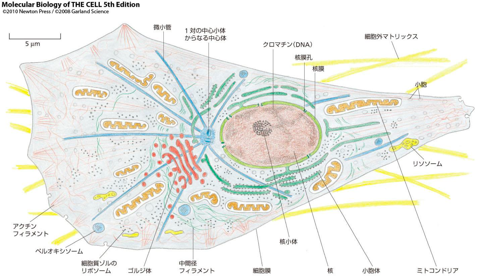
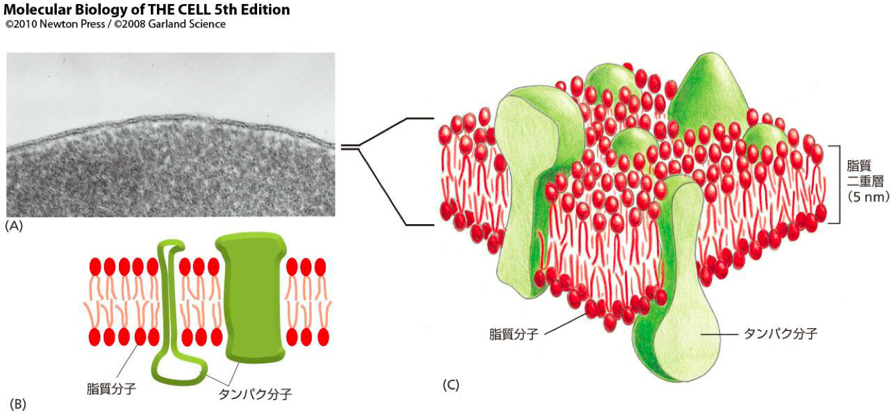
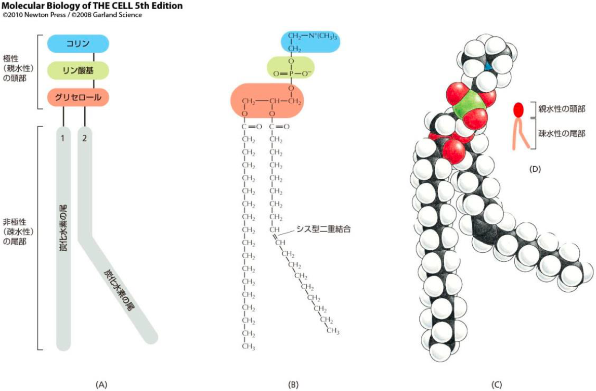
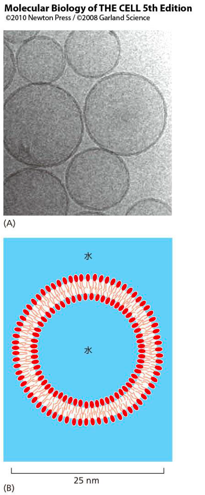
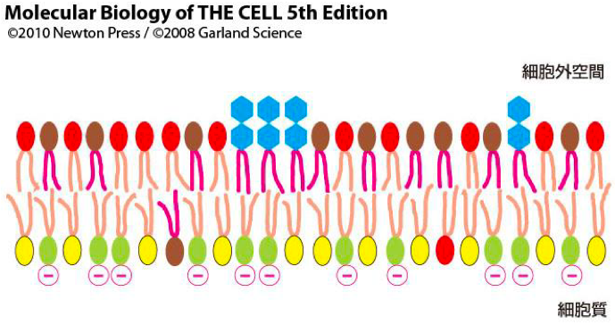
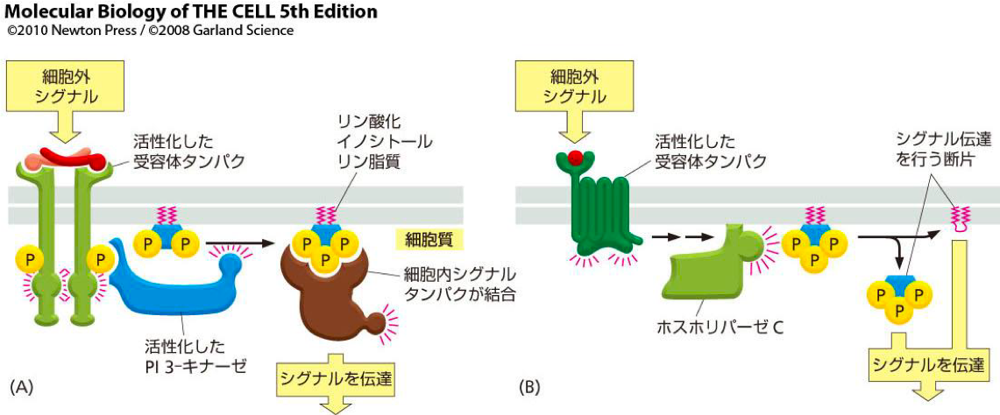
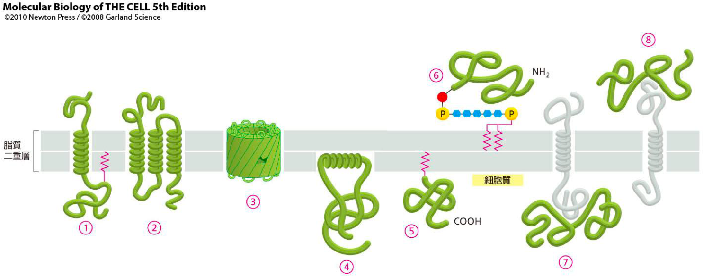
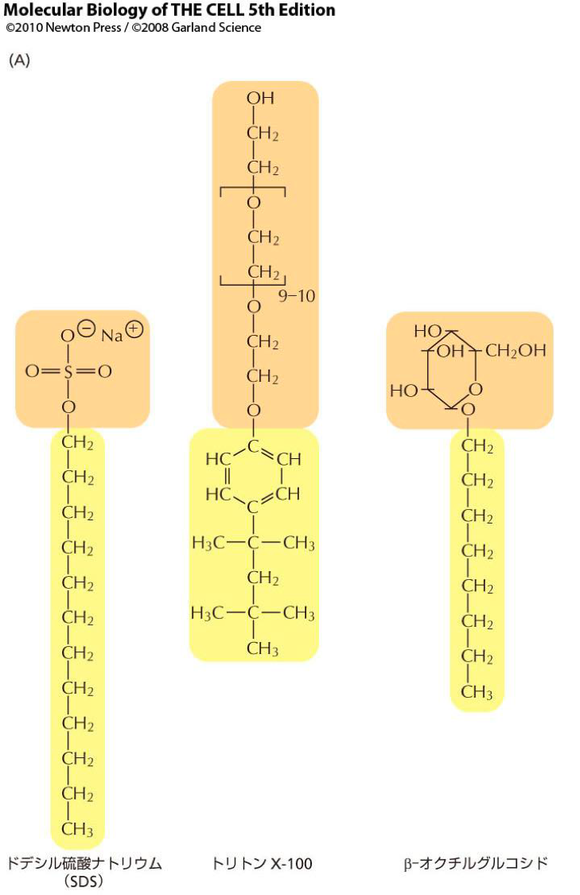
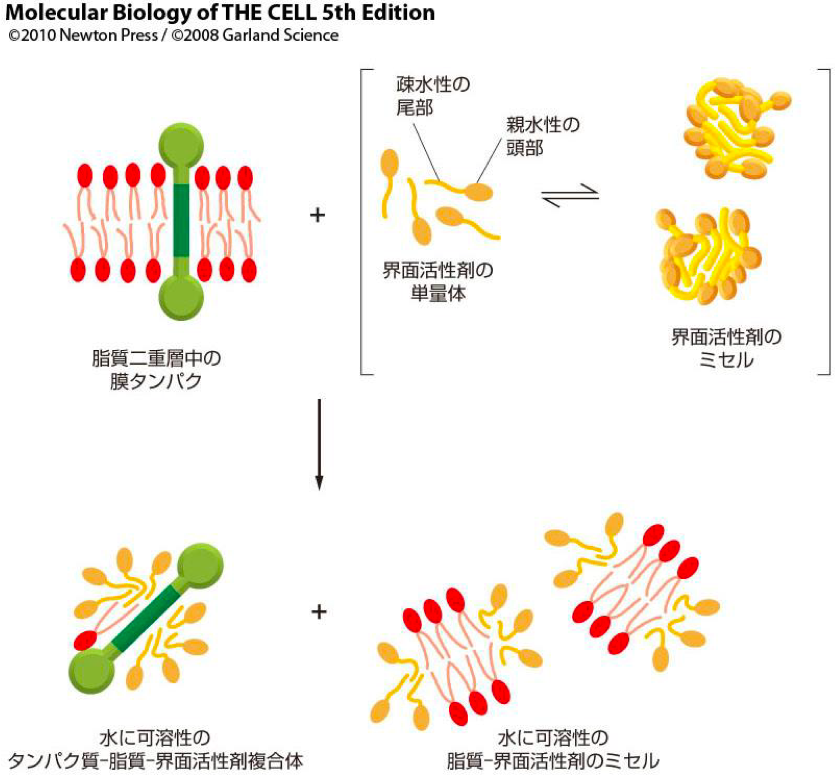
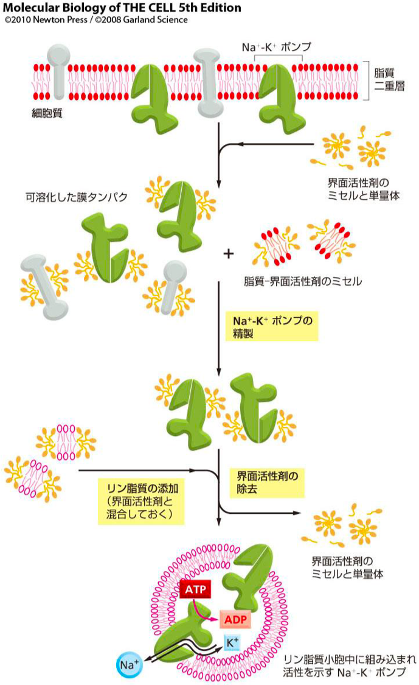

<!DOCTYPE html>
<html lang="ja">
    <head>
        <meta charset="utf-8">
        <meta http-equiv="X-UA-Compatible" content="IE=edge">
        <meta name="viewport" content="width=device-width, initial-scale=1.0">
        <meta name="author" content="Shuto" />

        <meta property="og:type" content="article" />
        <meta name="twitter:card" content="summary">

<meta name="keywords" content="3S, 生体物質化学Ⅱ, 生体物質化学Ⅱ, " />
<meta property="og:image" content="https://iwasakishuto.github.io/study/notes/theme/img/default_image.png"/>

<meta property="og:title" content="生体物質化学Ⅱ 第1回 "/>
<meta property="og:url" content="https://iwasakishuto.github.io/study/notes/生体物質化学Ⅱ-1.html" />
<meta property="og:description" content="" />
<meta property="og:site_name" content="My Notes" />
<meta property="og:article:author" content="Shuto" />
<meta property="og:article:published_time" content="2019-04-19T12:24:00+09:00" />
<meta property="og:article:modified_time" content="2019-04-19T12:24:00+09:00" />
<meta name="twitter:title" content="生体物質化学Ⅱ 第1回 ">
<meta name="twitter:description" content="">

        <title>生体物質化学Ⅱ 第1回  · My Notes
</title>
        <link href="//netdna.bootstrapcdn.com/twitter-bootstrap/2.3.2/css/bootstrap-combined.min.css" rel="stylesheet">
        <link href="//netdna.bootstrapcdn.com/font-awesome/4.7.0/css/font-awesome.css" rel="stylesheet">
        <link rel="stylesheet" type="text/css" href="https://iwasakishuto.github.io/study/notes/theme/css/pygments.css" media="screen">
        <link rel="stylesheet" type="text/css" href="https://iwasakishuto.github.io/study/notes/theme/tipuesearch/tipuesearch.css" media="screen">
        <link rel="stylesheet" type="text/css" href="https://iwasakishuto.github.io/study/notes/theme/css/elegant.css" media="screen">
        <link rel="stylesheet" type="text/css" href="https://iwasakishuto.github.io/study/notes/theme/css/admonition.css" media="screen">


        <!-- Use fontawesome Icon -->
        <link rel="stylesheet" href="https://use.fontawesome.com/releases/v5.7.0/css/all.css" integrity="sha384-lZN37f5QGtY3VHgisS14W3ExzMWZxybE1SJSEsQp9S+oqd12jhcu+A56Ebc1zFSJ" crossorigin="anonymous">
        <!-- Syntax highlight -->
        <link rel="stylesheet" href="https://cdnjs.cloudflare.com/ajax/libs/highlight.js/8.6/styles/github.min.css">
        <!-- Custom CSS -->
        <link rel="stylesheet" type="text/css" href="https://iwasakishuto.github.io/study/notes/theme/css/custom.css" media="screen">
        <script src="https://cdnjs.cloudflare.com/ajax/libs/highlight.js/8.6/highlight.min.js"></script>
        <script>hljs.initHighlightingOnLoad();</script>
        <!-- LaTex -->
        <!-- Github env -->
        <!--<script type="text/javascript" async src="//cdn.mathjax.org/mathjax/latest/MathJax.js?config=TeX-MML-AM_CHTML"></script>-->
        <script async src="https://cdnjs.cloudflare.com/ajax/libs/mathjax/2.7.0/MathJax.js?config=TeX-AMS_CHTML"></script>
        <script type="text/x-mathjax-config">
        	MathJax.Hub.Config({
        		tex2jax: {
        			inlineMath: [ ['$','$'], ["\\(","\\)"] ],
        			displayMath: [ ['$$','$$'], ["\\[","\\]"] ]
        		}
        	});
        </script>
        <!-- Mermaid -->
        <script src="https://unpkg.com/mermaid/dist/mermaid.min.js" charset="UTF-8"></script>
        <script>
          mermaid.initialize({
            startOnLoad:true
          });
        </script>
    </head>
    <body>
        <div id="content-sans-footer">
        <div class="navbar navbar-static-top">
            <div class="navbar-inner">
                <div class="container-fluid">
                    <a class="btn btn-navbar" data-toggle="collapse" data-target=".nav-collapse">
                        <span class="icon-bar"></span>
                        <span class="icon-bar"></span>
                        <span class="icon-bar"></span>
                    </a>
                    <a class="brand" href="https://iwasakishuto.github.io/study/notes"><span class=site-name style="color: #80273F;"><i class="fa fa-book"></i> My Notes</span></a>
                    <!--
                    <a class="brand" href="https://iwasakishuto.github.io/study/notes/"><span class=site-name style="margin-left:auto; margin-right:auto;"><i class="fas fa-book-reader"></i>My Notes</span></a>
                    -->
                    <div class="nav-collapse collapse">
                        <ul class="nav pull-right top-menu">
                            <li ><a href="https://iwasakishuto.github.io/"><i class="fas fa-home"></i>Portfolio Top</a></li>
                            <li ><a href="https://iwasakishuto.github.io/study/notes/categories"><i class="fa fa-list-alt"></i> Categories</a></li>
                            <li ><a href="https://iwasakishuto.github.io/study/notes/tags"><i class="fa fa-tags"></i> Tags</a></li>
                            <li ><a href="https://iwasakishuto.github.io/study/notes/archives"><i class="fa fa-folder-open"></i> Archives</a></li>
                            <li><form class="navbar-search" action="https://iwasakishuto.github.io/study/notes/search.html" onsubmit="return validateForm(this.elements['q'].value);"> <input type="text" class="search-query" placeholder="Search" name="q" id="tipue_search_input"></form></li>
                        </ul>
                    </div>
                </div>
            </div>
        </div>
        <div class="container-fluid">
            <div class="row-fluid">
                <div class="span1"></div>
                <div class="span10">
<article itemscope>
<div class="row-fluid">
    <header class="page-header span10 offset2">
    <h1><a href="https://iwasakishuto.github.io/study/notes/生体物質化学Ⅱ-1.html"> 生体物質化学Ⅱ 第1回  </a></h1>
    </header>
</div>

<div class="row-fluid">
        <div class="span8 offset2 article-content">

            
            <h1>第1回 2019/4/19</h1>
<ul>
<li>講師：<a href="http://www.biochem.s.u-tokyo.ac.jp/uemura-lab/uemura/">上村想太郎</a></li>
</ul>
<h2>生体膜の構造</h2>
<h3>細胞とは何か</h3>
<p></p>
<table>
<thead>
<tr>
<th align="center">器官</th>
<th align="left">説明</th>
</tr>
</thead>
<tbody>
<tr>
<td align="center">中心体</td>
<td align="left">動物細胞の中心に位置する細胞小器官。微小管形成中心(MTOC)であり、有糸分裂の間は紡錘体極の役割をする。大部分の動物細胞で、中心体には1対の中心小体がある。</td>
</tr>
<tr>
<td align="center">核膜</td>
<td align="left">核を包む二重の膜系（二重層が２枚）。外膜と内膜からなり、核膜孔が開いている。外膜は小胞体に連続している。</td>
</tr>
<tr>
<td align="center">小胞体</td>
<td align="left">真核細胞の細胞質にある膜で囲まれた迷路状の区画。脂質合成、膜結合タンパクと分泌タンパク形成の場。</td>
</tr>
<tr>
<td align="center">リソソーム</td>
<td align="left">真核細胞にある、消化酵素を含み膜に包まれた小器官。酵素活性はリソソームの内腔が示す酸性のpHで最も高くなる。</td>
</tr>
<tr>
<td align="center">核小体</td>
<td align="left">核内の目立つ構造で、rRNAの転写、リボソームのサブユニットの会合を起こす場所。</td>
</tr>
<tr>
<td align="center">細胞膜</td>
<td align="left">生細胞の周囲を包んでいる膜。</td>
</tr>
<tr>
<td align="center">ゴルジ体</td>
<td align="left">真核細胞にある複雑な小器官。中央には膜で囲まれた扁平な層状の空間があり、小胞体から運ばれたタンパク質や脂質がここで修飾され、仕分けされる。植物では細胞壁の多糖類、動物細胞では細胞外マトリックスのグリコサミノグリカンが合成される場である。</td>
</tr>
</tbody>
</table>
<h3>生体膜とは</h3>
<p>生体膜とは細胞や細胞小器官の有する、その<span class="marker-pink">外界との境界の膜</span>のことで、特有の構造を持つ。主に、以下のものを指す。</p>
<ul>
<li>真核生物の細胞膜</li>
<li>細菌の細胞膜</li>
<li>リソソーム膜</li>
<li>ミトコンドリア内膜・外膜</li>
<li>小胞体膜</li>
<li>ゴルジ体膜</li>
<li>核膜</li>
</ul>
<p></p>
<p>細胞膜には、例外なく、上図のように外部のシグナルを感知するタンパク質があり、<b>他の細胞からのシグナルを含めて外界からのシグナルに応じた挙動をとるのに役立っている。</b></p>
<p>これらはタンパクセンサー、すなわち<span class="marker-pink">受容体(receptor)</span>であって、膜を横切って（分子を運ぶというより）情報を伝達する。</p>
<h2>脂質二重層</h2>
<p>脂質二重層は全ての生体膜の基本構造である。膜の脂質は全て<span class="marker-pink">両親媒性(amphiphilic, amphipathic)</span>で、<span class="marker-pink">親水性(hydrophilic)</span>末端と<span class="marker-pink">疎水性(hydrophobic)</span>末端を持つ。</p>
<p>膜に最も大量に存在する脂質は<span class="marker-pink">リン脂質(phospholipid)</span>で、リン酸基を含む親水性の頭部1つと疎水性の炭化水素鎖の尾部2つからなる。</p>
<p>ほとんどの動物細胞の膜の主なリン脂質は<span class="marker-pink">グリセロリン脂質(glycerophospholipid)</span>である。これは炭素3個からなるグリセロール骨格を持ち、このうち2個の隣り合った炭酸原子には2本の長鎖脂肪酸がエステル結合している。</p>
<p></p>
<h3>リポソーム</h3>
<p>1970年代ごろ、個々の脂質分子が脂質二重層の平面内で自由に拡散できることが確認された。この事実は、まず人工の脂質二重層の研究で明らかにされた。1つは<span class="marker-pink">リポソーム(liposome)</span>と呼ばれる球形の小胞で、もう1つは2つの水槽を仕切る隔壁に開けた穴や固相の支持体の上に張った平らな二重層膜である。</p>
<table>
<thead>
<tr>
<th align="center">画像</th>
<th align="left">説明</th>
</tr>
</thead>
<tbody>
<tr>
<td align="center"></td>
<td align="left">(A)固定・染色していない水中のリン脂質小胞（リポソーム）の電子顕微鏡写真<br>(B)リポソーム断面の模式図。膜のモデルとして色々な実験に用いられる。</td>
</tr>
</tbody>
</table>
<h3>脂質二重膜の非対称構造</h3>
<p></p>
<p>脂質の非対称は、機能、特に細胞外シグナルを細胞内シグナルに変換する機能にとって重要である。</p>
<p>細胞質内にあるタンパク質（キナーゼなど）の多くは脂質二重層の細胞質に面した側の単分子層にある脂質の頭部と特異的に結合し、活性化する。</p>
<h3>細胞外シグナルを細胞内へ伝える仕組み</h3>
<p></p>
<ul>
<li>(A)細胞外部からのシグナルがPI 3キナーゼを活性化し、キナーゼがイノシトールリン脂質をリン酸化し、その部位が様々なシグナルタンパク質の結合部位となる。</li>
<li>(B)細胞外部からのシグナルがホスホリパーゼを活性化、ホスホリパーゼはイノシトールリン脂質の一部を切断、断片はシグナル伝達、残った膜内にある断片はキナーゼを活性化する。</li>
</ul>
<p>※<b>細胞が生きているか死んでいるかは、非対称性で判別可能である。</b></p>
<p>∵）細胞膜リン脂質の非対称性が維持されているのはアミノリン脂質トランスロカーゼが、ATPのエネルギーを用いて細胞外側の、ホスファチジルセリン(PS)、ホスファチジルエタノールアミン(PE)分子を細胞質側に移動させているからである。</p>
<p>アポトーシスの進行に伴ない、この反応が停止すると、PS が細胞表面に露出する。細胞表面の PS は、<span class="marker-pink">マクロファージ</span>によって認識され、貪食・消化される。従って、アポトーシス細胞は対称性に変化が生じている。</p>
<h2>膜タンパク質</h2>
<p>生体膜の基本構造は脂質二重層だが、膜に特異的な昨日の多くはタンパク質が担っている。つまり、タンパク質こそが細胞の膜それぞれに特有の機能を与えるのである。</p>
<h3>膜タンパク質は脂質二重層に組み込まれている</h3>
<p></p>
<p>上の図形のように、膜タンパク質は様々な方法で脂質二重層に組み込まれている。</p>
<table>
<thead>
<tr>
<th align="center">番号</th>
<th align="left">組み込まれ方</th>
</tr>
</thead>
<tbody>
<tr>
<td align="center">①〜③</td>
<td align="left">脂質二重層を貫通して一部が膜の両側に突出</td>
</tr>
<tr>
<td align="center">④</td>
<td align="left">ヘリックスが単分子層にのみ結合</td>
</tr>
<tr>
<td align="center">⑤</td>
<td align="left">共有結合により結合（細胞内側）</td>
</tr>
<tr>
<td align="center">⑥</td>
<td align="left">オリゴ糖を介して共有結合（細胞外側）</td>
</tr>
<tr>
<td align="center">⑦⑧</td>
<td align="left">脂質二重層には入り込まず、他の膜タンパク質と非共有結合で結合</td>
</tr>
</tbody>
</table>
<h3>膜タンパク質は界面活性剤を用いて可溶化・精製できる</h3>
<p>一般に、膜タンパク質は、疎水結合を壊し二重層を破壊する試薬でしか可溶化できない。</p>
<p>膜の研究者にとって最も役立つのは<span class="marker-pink">界面活性剤(detergent)</span>である。これは、色々な構造をとる両親媒性の小分子で、脂質よりもはるかに水に溶けやすい。</p>
<p>膜に界面活性剤を作用させるとその疎水性末端が膜タンパクの疎水性部分に結合し、周囲を取り巻いて脂質分子と置き換わる。界面活性剤のもう一方の端は極性なので、膜タンパクは界面活性剤とタンパク質の複合体となって水中に溶出することになる。</p>
<p>以下は、よく使用される３種類の界面活性剤の構造である。</p>
<p></p>
<h4>可溶化</h4>
<p></p>
<p>膜に界面活性剤を作用させるとその疎水性末端が膜タンパクの疎水性部分に結合し、周囲を取り巻いて脂質分子と置き換わる。界面活性剤のもう一方の端は極性なので、膜タンパクは界面活性剤とタンパク質との複合体となって水中に溶出することになる。</p>
<h4>再構成</h4>
<p></p>
<p>疎水性の膜タンパクには、弱い界面活性剤を使って可溶化し、機能を持ったまま複製できるものも多い。これらの界面活性剤は、タンパク質が膜を横切る部分、すなわち脂質が取り除かれた後、露出する部分の疎水性領域を覆うが、立体構造をほどきはしない。</p>
<p>可溶化された膜タンパク溶液の界面活性剤濃度を（希釈などで）下げると、膜タンパクは溶けてはいられなくなる。しかしそのような溶液中にリン脂質分子を過剰に存在させると、小さなリボソームが自然に形成されてその中に膜タンパクが組み込まれる。精製した構成分子からこのようにして機能を持つ膜タンパク系が再構成でき、膜輸送、イオンチャネル、シグナル受容体などの活性解析に活用されている。</p>
<p>上の画像は、活性のある <span class="math">\(\mathrm{Na}^{+}\text{-}\mathrm{K}^{+}\)</span> ポンプ分子を精製し、リン脂質小胞中に組み込んでいる。</p>
<script type="text/javascript">if (!document.getElementById('mathjaxscript_pelican_#%@#$@#')) {
    var align = "center",
        indent = "0em",
        linebreak = "false";

    if (false) {
        align = (screen.width < 768) ? "left" : align;
        indent = (screen.width < 768) ? "0em" : indent;
        linebreak = (screen.width < 768) ? 'true' : linebreak;
    }

    var mathjaxscript = document.createElement('script');
    mathjaxscript.id = 'mathjaxscript_pelican_#%@#$@#';
    mathjaxscript.type = 'text/javascript';
    mathjaxscript.src = 'https://cdnjs.cloudflare.com/ajax/libs/mathjax/2.7.3/latest.js?config=TeX-AMS-MML_HTMLorMML';

    var configscript = document.createElement('script');
    configscript.type = 'text/x-mathjax-config';
    configscript[(window.opera ? "innerHTML" : "text")] =
        "MathJax.Hub.Config({" +
        "    config: ['MMLorHTML.js']," +
        "    TeX: { extensions: ['AMSmath.js','AMSsymbols.js','noErrors.js','noUndefined.js'], equationNumbers: { autoNumber: 'none' } }," +
        "    jax: ['input/TeX','input/MathML','output/HTML-CSS']," +
        "    extensions: ['tex2jax.js','mml2jax.js','MathMenu.js','MathZoom.js']," +
        "    displayAlign: '"+ align +"'," +
        "    displayIndent: '"+ indent +"'," +
        "    showMathMenu: true," +
        "    messageStyle: 'normal'," +
        "    tex2jax: { " +
        "        inlineMath: [ ['\\\\(','\\\\)'] ], " +
        "        displayMath: [ ['$$','$$'] ]," +
        "        processEscapes: true," +
        "        preview: 'TeX'," +
        "    }, " +
        "    'HTML-CSS': { " +
        "        fonts: [['STIX', 'TeX']]," +
        "        styles: { '.MathJax_Display, .MathJax .mo, .MathJax .mi, .MathJax .mn': {color: 'inherit ! important'} }," +
        "        linebreaks: { automatic: "+ linebreak +", width: '90% container' }," +
        "    }, " +
        "}); " +
        "if ('default' !== 'default') {" +
            "MathJax.Hub.Register.StartupHook('HTML-CSS Jax Ready',function () {" +
                "var VARIANT = MathJax.OutputJax['HTML-CSS'].FONTDATA.VARIANT;" +
                "VARIANT['normal'].fonts.unshift('MathJax_default');" +
                "VARIANT['bold'].fonts.unshift('MathJax_default-bold');" +
                "VARIANT['italic'].fonts.unshift('MathJax_default-italic');" +
                "VARIANT['-tex-mathit'].fonts.unshift('MathJax_default-italic');" +
            "});" +
            "MathJax.Hub.Register.StartupHook('SVG Jax Ready',function () {" +
                "var VARIANT = MathJax.OutputJax.SVG.FONTDATA.VARIANT;" +
                "VARIANT['normal'].fonts.unshift('MathJax_default');" +
                "VARIANT['bold'].fonts.unshift('MathJax_default-bold');" +
                "VARIANT['italic'].fonts.unshift('MathJax_default-italic');" +
                "VARIANT['-tex-mathit'].fonts.unshift('MathJax_default-italic');" +
            "});" +
        "}";

    (document.body || document.getElementsByTagName('head')[0]).appendChild(configscript);
    (document.body || document.getElementsByTagName('head')[0]).appendChild(mathjaxscript);
}
</script>
            <div>
</div>

            
            
            <hr/>
        </div>
        <section>
        <div class="span2" style="float:right;font-size:0.9em;">
            <h5>Published</h5>
            <time itemprop="dateCreated" datetime="2019-04-19T12:24:00+09:00"> 4 19, 2019</time>

<h5>Last Updated</h5>
<time datetime="2019-04-19T12:24:00+09:00"> 4 19, 2019</time>

            <h5>Category</h5>
            <a class="category-link" href="https://iwasakishuto.github.io/study/notes/categories.html#sheng-ti-wu-zhi-hua-xue-ii-ref">生体物質化学Ⅱ</a>
            <h5>Tags</h5>
            <ul class="list-of-tags tags-in-article">
                <li><a href="https://iwasakishuto.github.io/study/notes/tags#3s-ref">3S
                    <span>79</span>
</a></li>
                <li><a href="https://iwasakishuto.github.io/study/notes/tags#sheng-ti-wu-zhi-hua-xue-ii-ref">生体物質化学Ⅱ
                    <span>7</span>
</a></li>
            </ul>
<h5>Contact</h5>
    <a href="https://twitter.com/cabernet_rock" title="My twitter Profile" class="sidebar-social-links" target="_blank">
    <i class="fab fa-twitter sidebar-social-links"></i></a>
    <a href="https://github.com/iwasakishuto" title="My github Profile" class="sidebar-social-links" target="_blank">
    <i class="fab fa-github sidebar-social-links"></i></a>
    <a href="https://www.facebook.com/iwasakishuto" title="My facebook Profile" class="sidebar-social-links" target="_blank">
    <i class="fab fa-facebook sidebar-social-links"></i></a>
        </div>
        </section>
</div>
</article>
                </div>
                <div class="span1"></div>
            </div>
        </div>
        <div id="push"></div>
    </div>
<footer>
<div id="footer">
    <ul class="footer-content">
        <li class="elegant-power">Powered by <a href="http://getpelican.com/" title="Pelican Home Page">Pelican</a>. Theme: <a href="https://github.com/Pelican-Elegant/elegant/" title="Theme Elegant Home Page">Elegant</a></li>
    </ul>
</div>
</footer>            <script src="//code.jquery.com/jquery.min.js"></script>
        <script src="//netdna.bootstrapcdn.com/twitter-bootstrap/2.3.2/js/bootstrap.min.js"></script>
        <script>
            function validateForm(query)
            {
                return (query.length > 0);
            }
        </script>
        <script src="https://iwasakishuto.github.io/js/smooth-scroll.polyfills.min.js"></script>

    
    </body>
    <!-- Theme: Elegant built for Pelican
    License : MIT -->
</html>